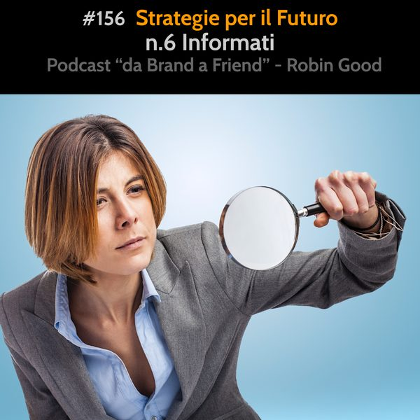

Strategie per il Futuro: #6 Informati

*Strategie per il Futuro: #6 Informati*
Per poter pianificare e realizzare i propri obiettivi è indispensabile essere ben informati. E' importante perché ci aiuta a vedere ed anticipare trend, costumi e necessità che altrimenti non ci sarebbero così immediatamente apparenti.
Ma essere bene informati, per me non è sinonimo di aver letto, sentito molte notizie e informazioni. Bene informato significa aver bypassato nella maggior parte dei casi le fonti ufficiali ed essere andati di persona a verificare come stanno le cose, o se quelle che ci vengono raccontate sono davvero autentiche.
Nella mia esperienza di vita le persone meglio informate hanno tutte una caratteristica in comune. Si informano pro-attivamente. Leggono. Si fanno molte domande e amano verificare e mettere in discussione ciò che altri invece danno per certo solo perché gli è stato comunicato da una persona o fonte "autorevole".
Capisco che sia molto difficile abbracciare d'amblé l'idea che la maggior parte delle fonti "autorevoli" siano manipolate, poco affidabili o addirittura veri e propri strumenti di propaganda, ma con mio grande rammarico devo ammettere che è proprio così.
Per questo motivo non ci si può più affidare ne ai mezzi di informazione ufficiale, ne a coloro che per superficialità e noncuranza condividono informazioni e notizie che hanno sentito da altri senza averle mai vagliate e verificate di persona.
Quando viene a mancare in forma generalizzata un interesse sincero per capire le cose, per fare domande rilevanti e capire cosa realmente accade, si è in totale balia di ciò che viene raccontato anche laddove queste notizie e info siano prive di fondamento.
Soprattutto laddove vengono censurate, vietate, multate persone e fonti di informazioni non allineate al credo ufficiale, è vitale rimanere in grado di analizzare e studiare oggettivamente fatti e dati disponibili e di mantenere una propria capacità di analisi e valutazione personale non basata sulla paura.
La paura non è mai una buona consigliera. Piuttosto, è lo strumento più potente ed efficace per convincere gli esseri umani con zero senso critico ad accettare qualsiasi idea o richiesta, anche la più aberrante.
Un imprenditore che desideri oggi costruire valore attraverso le tecnologie digitali, non può quindi affidarsi al passaparola, ai social media o alle fonti mainstream per tenersi informato sulla realtà che lo circonda. Deve per forza essere curioso, pro-attivo nell'informarsi, critico nella scelta delle fonti a cui attinge, e costantemente attento nel non bersi tutto ciò che gli viene detto, se non dopo averlo verificato.
Le mie motivazioni principali su questo fronte, nell'assumere questo atteggiamento fortemente critico, sono essenzialmente queste:
1) I media tradizionali e tutti i principali social media sono diventati dei canali di propaganda controllati dalle stesse entità di potere. Censurano, oscurano e nascondono informazioni e notizie, a favore di ciò che la loro narrativa stabilisce. Queste entità servono interessi commerciali e di potere che non hanno a cuore la piccola imprenditoria indipendente ma che anzi intendono gradualmente eliminare.
2) Io credo che la nostra missione su questo pianeta sia una missione di apprendimento, di conoscenza, di scoperta. Per fare ciò è necessario studiare e informarsi in maniera pro-attiva. critica e analitica. Non prendendo sempre per buono ciò che dice il professore o il libro. Finché non sei in grado di mettere in discussione e di far veramente tuo qualsiasi concetto, provando a smontarlo e a ricostruirlo tu stesso, sarai sempre in balia di ciò che altri desiderano fare per sfruttarti.
3) Osservo che la maggior parte delle persone che incontro è male informata. Capisco che è male informata, perché se gli chiedo di spiegarmi la logica in base alla quale credono in una certa cosa o in un'altra, la loro risposta non contiene dati, informazioni o esperienze da loro raccolte, verificate o fatte, ma solo il saper ripetere ciò che hanno sentito dire da altri. Per conoscere la realtà è necessario un GH (growth hacker mindsetI). Testo, sperimento, verifico, e poi valuto e decido. Non mi affido a guru e regole d'oro. Mi confronto con la realtà studiandola e osservando i risultati dei miei esperimenti.
4) Le cose intorno a noi continuano a cambiare sempre più rapidamente. Non essere in grado di poter interpretare questa realtà in rapido e continuo cambiamento limita fortemente coloro che costruiscono progetti, servizi e prodotti, "sperando" che le cose vadano meglio o tornino come prima in futuro. Questi imprenditori sono a rischio fallimento massimo.
5) Il poter essere in grado di leggere fra le righe delle notizie ufficiali cosa sta realmente accadendo, vagliando, verificando e facendo domande, offre opportunità di pianificare in maniera intelligente la propria attività e di non trovarsi impreparati ai nuovi cambiamenti in arrivo.
6) Con la quantità di informazioni e cambiamenti in corso attualmente, e con la prospettiva di un ulteriore crescita delle stesse, penso che sia indispensabile iniziare ad individuare fonti di informazione indipendenti, piccole e fidate sulla base di quelli che sono gli interessi, gli obiettivi e i valori morali ed etici a cui uno aspira. Queste possono alleggerire il nostro carico nel restare informati agendo da filtri attivi su specifici fronti di interesse, aiutandoci a riconoscere trend e tendenze emergenti così come a individuare nuove fonti, risorse e strumenti utili al raggiungimento dei n ostri obiettivi.
Non seguire le news. Informati.
-------------
Info Utili
• Musica di questa puntata:
"Solarplex" by Birocratic - disponibile su Bandcamp:
https://birocratic.bandcamp.com/track/solarplex
• Dammi feedback:
critiche, commenti, suggerimenti, idee e domande unendoti al gruppo Telegram https://t.me/@RobinGoodPodcastFeedback
• Ascolta e condividi questo podcast:
https://gopod.me/RobinGood
• Diventa sostenitore:
sostieni il lavoro di Robin Good e tutti i contenuti e risorse utili che condivide costantemente
https://robingood.com/patreon-sharewood-community-campus
https://Patreon.com/Robin_Good
• Seguimi su Telegram:
https://t.me/RobinGoodItalia
(tutti i miei contenuti, immagini, audio e video in un solo canale)
oppure
https://facebook.com/RobinGoodItalia/
(Pagina Facebook ufficiale)
• Newsletter:
http://robingood.it/toptools-newsletter
• Per info e richieste:
mailto: Ludovica.Scarfiotti@robingood.it